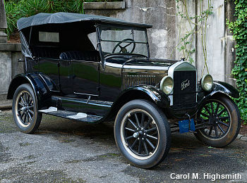
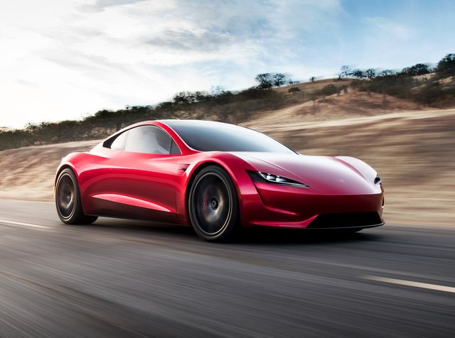
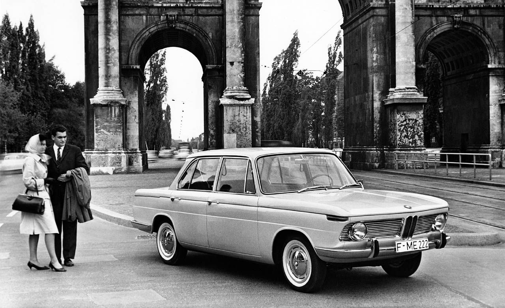
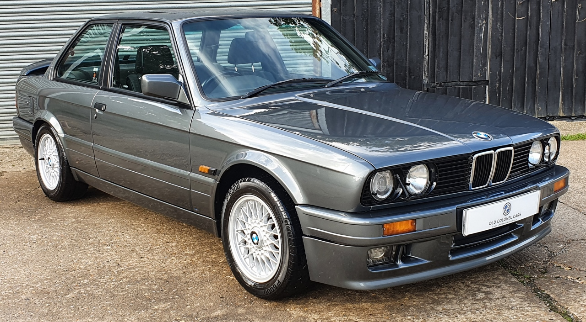

The Evolution of Cars Started with Steam and Electricity Power the Earliest Vehicles (1700s-1890s) You may be surprised to find electric vehicles aren’t a new concept. The first automobiles actually ran on steam and electricity. You may also be surprised to learn the first vehicles were developed in the late 1700s. Those first “vehicles” were powered by steam. It was an energy source that had been used for many years to power trains. However, it wasn’t until the 1870s that steam power became more practical for small vehicles. Despite improvements, there were still a lot of shortcomings. Steam-powered vehicles took a very long time to start up and the range was limited. In the early 1800s, inventors around the world began building electric-powered buggies. A few decades later inventors in England and France created vehicles that were much closer to modern-day EVs. In 1890, William Morrison built the first electric car in the U.S. The car could go 14 miles per hour and fit six people. It was very rudimentary, but it got interest going in America. Within 10 years a third of the vehicles in the U.S. were electric. Electric vehicles were popular because they weren’t as difficult to start as steam and gas combustion engines and operation didn’t involve difficult gear shifts. Like today, the first EVs were quiet and didn’t emit smelly air pollution. Meanwhile, in 1898, Ferdinand Porsche did something revolutionary. He created the first hybrid vehicle that was powered by electricity and gas. It was a blueprint for the hybrids that would be built more than 100 years later.
While some of the very first cars were powered by steam engines, dating back to the 1700s, it was Karl Benz in 1885 who invented the first gas-powered car, which he later received a patent for in 1886. Benz’s first car had three wheels, looked much like an elongated tricycle and sat two people. Four-wheeled gas-powered cars were later introduced in 1891. The invention of the gas-powered automobile marked the beginning of the vehicular evolution in America. The first cars didn’t have windshields, doors, turn signals, or even a round steering wheel – a far cry from what we’ve become accustomed to. It can be said that Karl Benz’s first gas-powered car was the major catalyst for the production of modern automobiles, as many automakers followed in his footsteps, trying to create their own version of a car. At the time electric vehicles were on their way to being the norm. But there was one problem with early electric vehicles. People were interested in owning them, but the elaborate machines were too expensive for the middle class. It wasn’t until Henry Ford’s 1908 Model T that automobiles started to resemble what we’re familiar with today. Thanks to Ford’s invention of the assembly line, the gas-powered Model T could be mass-produced and became affordable for the general population. Ford had been working with Thomas Edison to create a better battery for electric vehicles, but the success of the affordable Model T halted the progress. Another factor was the invention of the electric starter in 1912. It eliminated the need to hand-crank gas-powered vehicles. Once oil was discovered in Texas and gasoline became cheap gas-powered vehicle sales began to surge. Today the opposite is true. The high cost of gasoline and pollution concerns have helped electric vehicles make a comeback. And Edison would be happy to know that the latest EVs have batteries that will go up to 400+ miles.
Along with mass production came new features, some of the first being speedometers, seatbelts, windshields and rearview mirrors. Believe it or not, the first turn signals weren’t added to a car until Buick did it in 1939 – that’s even after the first car with electric windows and air conditioning! Then cars started to get fancy, with power steering (1951), cruise control (1957), three-point seatbelts (1959) and heated seats (1966). In 1973, Oldsmobile installed the first passenger airbag into their “Tornado” model. Over 20 years later in 1998, the federal government required all passenger vehicles to come standard with dual frontal airbags. In the late 80’s and early 90’s keyless entry systems, electric doors and windows, sunroofs and CD players began to be standard features. This is about the time when technology became a big selling point.

This brings us to modern-day cars with Bluetooth, hard drives, advanced safety systems, GPS, WiFi and even the ability to parallel park themselves. It seems crazy, but it’s true. In this age, cars come standard with features that were once a luxury (or didn’t even exist at all). And driverless cars that once seemed like something out of a science fiction film are close to being a reality. It’s amazing to think how far cars have come and where the technology will go down the road. With technology advancing, it's more important than ever to keep up with on-road driving techniques to keep those around you safe at all times. Check out our defensive driving course for more information on how to learn the latest best practices online.
BMW was created in 1917 from the Munich firm Rapp-Motorenwerke. The company was incorporated into Knorr-Bremse AG in 1920 before being refounded as BMW AG in 1922. It was the successor of Bayerische Flugzeugwerke AG, founded in 1916. 1916 is therefore considered BMW's founding year
 